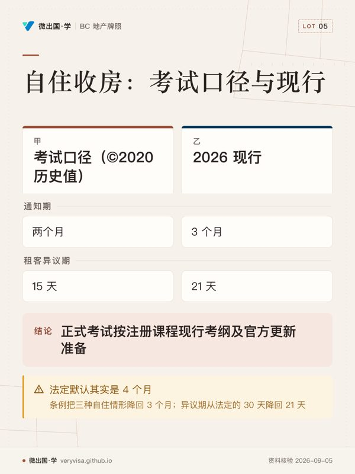

核实日期：2026-09-05。《住宅租赁法》(Residential Tenancy Act, RTA) 与《商业租赁法》(Commercial Tenancy Act, CTA) 均回读 BC Laws 现行合并本（两部都自标 current to September 1, 2026），配套的 Residential Tenancy Regulation 同日回读。出处见文末源表。
这一章是全书时效风险最高的一章之一。 商业租赁那一半几乎没有变——它靠普通法与合同条款运行，六年里唯一值得提的是法条编号没动。住宅租赁那一半则被 2021、2024、2025 三轮修法整段重写：自住收房的通知期改过两次、装修收房从「发通知」变成「向仲裁机构申请裁令」、若干种通知必须由官方网上门户生成、特定 5 户及以上楼宇禁止自住收房、年度租金上限的公式也换了。
考试口径（©2020）关于住宅收房的每一个天数、每一份表格、以及它给持牌人示范的那条合同条款，今天照做都会出事。
一、先分清两个世界：租赁 vs 许可、商业 vs 住宅
租赁与许可（lease vs licence）
租赁 (lease) 在普通法上创设土地权益 (interest in land)：它「随地而走 (runs with the land)」，业主把地卖了，新业主要承受这份租赁；它同时创设房东与租客的法律关系，带来一整套默示权利义务。许可 (licence) 只是一份合同特权：不创设土地权益，不随地而走，只有合同上明写的那些权利。
判断一份协议到底是租赁还是许可，看的是当事人的意图，而认定意图最有分量的证据是：这份协议有没有给出排他占有 (exclusive possession)——占用人能不能连业主也排除在外地控制该处所。合同抬头写「licensor / licensee」不决定性质；给了排他占有，法院通常认定它是租赁。
这一步为什么要紧：只有租赁关系才落进 RTA 与 CTA 的保护。判成许可，租客拿不到 RTA 那一整套安全保障。
商业租赁 vs 住宅租赁：两套完全不同的法律工具

| 商业租赁 (commercial tenancy) | 住宅租赁 (residential tenancy) | |
|---|---|---|
| 合同叫什么 | lease（租约） | tenancy agreement（租赁协议） |
| 主要靠什么 | 合同条款 + 普通法；CTA 只补几个洞（追租、强制迁出、双倍租金） | 成文法 RTA + 条例，合同只在法条留白处起作用 |
| 通知形式 | 无法定表格，内容清楚即可 | 房东一方必须用官方表格，若干种还必须由 RTB 门户生成 |
| 争议去哪 | 法院（BC 最高法院 / 小额法庭） | Residential Tenancy Branch (RTB) 的争议解决程序，法院管辖权被 RTA 排除 |
| 追租手段 | 可以扣押租客财物变卖 (distress) | 禁止（RTA s.26(3)） |
⚠️
「这套房子是住宅，所以走 RTA」——不一定
RTA s.4 列了 11 类不适用的居住形态，考试口径只抄了其中 4 类。最常被漏掉的是 s.4(c)：租客与该处所的业主共用厨房或卫生间——这正是 BC 独立屋出租最常见的一种形态。 还有：非营利合作社租给社员、学校租给学生或员工的宿舍、 与主要作商业用途的处所同一份合同一起租的居住部分、作度假或旅游住宿使用的居住处所、 紧急庇护与过渡性住房、护理与医院设施内的住宿、惩教机构内的住宿、 租期超过 20 年的租赁，以及适用《房车园租赁法》(Manufactured Home Park Tenancy Act) 的协议。 上市前问清楚「租客跟业主共不共用厨卫」，比背 11 类清单更管用。
合同要写什么
商业：租期超过 3 年的租约要满足《Law and Equity Act》s.59（一般须有书面），否则法院不予强制执行；即便法律不要求书面，也必须写清当事人姓名、处所描述、起始日、租期长度、租金与其他重要条款——因为商业租赁的空白处会被普通法用默示条款填满，填出来的结果未必是当事人想要的。
住宅：RTA s.13 与条例规定协议必须书面、双方签名注明日期、用普通人读得懂的写法，并且必须包含标准条款 (standard terms)、双方法定全名、单位地址、订立日期、房东送达地址与电话、起租日、周期性租期的周期、固定期租期的结束日与到期后如何处理、租金金额与到期日、租金含哪些服务与设施、押金与宠物押金的金额与缴付日。省里备有标准表格，但不强制使用；自拟协议只要满足条例即可，且订立后须及时把书面协议副本交给租客，最迟不得晚于 21 天。
二、租期类型与终止（商业侧：考试口径长青）
固定期 (fixed term)：商业租约可以是一周也可以是 99 年，起始日与期限必须在生效前可以确定。固定期届满自动终止，任何一方都不需要发通知。租期超过 20 年的「住宅」性质租赁不算住宅租赁，按商业租赁处理。
周期性租赁 (periodic tenancy)：在期末自动续为同样长度的一期，直到有一方以适当通知终止。商业周期性租赁的产生有两条路——租约明写，或者租客在固定期满后继续占有而房东收下租金，由法律推定。推定出来的周期长度看原租期与租金的表述方式：原租期一年以上且租金按年表述，通常推为年租；原租期不足一年或租金按月表述，通常推为月租。
商业周期性租赁的终止只要求「合理通知 (reasonable notice)」：周租或月租通常一个租期，年租通常六个月。通知形式不重要，只要意思清楚、时间确定；姓名、处所、日期上的小错误，只要意图明确，通常不影响效力。
意愿租赁 (tenancy at will)：占用人经业主同意占有土地，任何一方随时可终止。最常见的场景是卖方允许买方在成交前先行入住。只要不是明确约定免租，业主有权就「使用与占有」获得补偿；但如果开始按期收租，法律会推定它已变成周期性租赁。
🔧
成交前提前交房，别以为「反正马上就过户了」
提前占有创设的是意愿租赁。若买方开始按月付款而交易迟迟不闭， 这段关系可能被推定成周期性租赁，终止就得给合理通知。 商业物业尤其要在合同里写清占有的性质、费用与终止方式。
三、住宅收房：2026 年的现行地图
这一节是本章的核心，也是考试口径受伤最重的地方。先给结论表，再逐条说变化。
3.1 现行通知与异议期一览（2026-09-05 核）
| 情形 | 法条 | 通知期 | 租客异议期 | 表格 |
|---|---|---|---|---|
| 欠租或欠水电费 | RTA s.46 | 10 天 | 5 天（5 天内付清，通知即失效） | RTB-30 |
| 因由（违约、损坏、扰邻、非法活动等 12 种） | RTA s.47 | 1 个月 | 10 天 | RTB-33 |
| 雇佣关系结束（看管员等） | RTA s.48 | 1 个月 | 10 天 | RTB-33 |
| 租客不再符合补贴房资格 | RTA s.49.1 | 2 个月 | 15 天 | RTB-32Q |
| 买家（或其近亲）自住 | RTA s.49(5) | 3 个月 | 21 天 | RTB-32P（须门户生成） |
| 房东（或其近亲、家族公司股东）自住 | RTA s.49(3)(4) | 3 个月 | 21 天 | RTB-32L（须门户生成） |
| 拆除、改共管、改合作社、改非住宅用途 | RTA s.49(6) | 4 个月 | 30 天 | RTB-29 |
| 改作看管员/管理员用房 | RTA s.49(6)(e) | 4 个月 | 30 天 | RTB-29C（须门户生成） |
| 大修/改造（renoviction） | RTA s.49.2 | 不发通知，须先向 RTB 申请裁令；裁令生效日不早于 4 个月 | 在申请程序里当场抗辩 | 走争议解决申请 |
| 房车园整体改用途 | 房车园法 | 12 个月 | 15 天 | RTB-31 |
✕
考试口径说的「两个月通知 + 15 天异议」现在两个数都是错的
考试口径写自住收房＝Two Month Notice、租客 15 天异议。现行是 3 个月通知 + 21 天异议， 而且中间还拐过一次弯：RTA s.49(2)(a)(i) 的法定默认其实是 4 个月， 条例 s.42.2 再把 s.49(3)(4)(5) 三种自住情形降回 3 个月， 条例 s.42.3 把异议期从法定的 30 天降回 21 天。 两个月是 ©2020 历史值；现行通常为 3 个月，正式考试按注册课程现行考纲及官方更新准备（详见第九节对照表）。
3.2 三次改动，各解决什么问题
第一次：2021-07-01，装修收房改走裁令（RTA s.49.2）。 考试口径教的是「房东发一份四个月通知就能因大修收房」。现行不行了：房东必须主动向 RTB 申请争议解决，请求终止租赁令与占有令，并且要同时满足四个条件——善意打算装修且已取得法律要求的全部许可与批准、装修必须清空单位才能做、装修是延长或维持该单位或该栋楼使用寿命所必需的、以及清空的唯一合理途径就是终止租赁。一栋楼要动多个单位的，房东必须合并成一次申请、生效日一致（s.49.2(2)），不能一户一户蚕食。仲裁员认可后签发的占有令，生效日不早于裁令作出后 4 个月。
底层逻辑很清楚：把「是否真的必须清空」的判断权，从房东手里挪到中立第三方手里，事前审查取代事后追偿。
第二次：2024-07-18 起分批落地，自住收房必须走网上门户（RTA s.53.1 + 条例 s.42.1）。 买家自住的通知自 2024-07-18 起、房东自住的通知自 2025-06-18 起，必须在 RTB 的 Landlord Use Web Portal 上生成，生成件左上角带唯一的 Notice ID。房东在门户里要填自己以及相关人士（买家、实际入住人）的出生日期，这些信息只供 RTB 内部核验、不出现在通知上。不是门户生成的通知，在法律上不可执行。 违反 s.53.1 属于 RTA s.95(1)(l.2) 的罪行，罚款上限 $5,000。
同一轮还加进 s.44.1：房东发出终止通知时，通知上写的理由必须当时确实成立，或者房东有合理理由相信它成立；否则同样构成罪行（s.95(1)(l.1)）。这一条把「先发通知、被质疑再说」的做法直接堵死。
第三次：特定 5 户及以上楼宇禁止自住收房（RTA s.49(6.1)）。 除条例另有规定外，只要单位所在楼宇含 5 个或以上出租单位，且该楼不是分层产权 (strata-titled)，或者虽是分层产权但全部出租单位属同一业主，房东就不得以自住、家族公司股东自住、买家自住为由发出终止通知。考试口径完全没有这一条——它不是数字过期，是一整类做法被禁掉。
ℹ️
判「5 户」看的是楼，不是产权份数
判断的单位是「该单位所在的楼宇里有几个出租单位」。 分层产权公寓若只有一个出租单位，不满足至少 5 个出租单位的门槛； 同一栋楼的全部出租单位都归一个业主时，才落进 s.49(6.1)(b)。 官方网页对第二种情形的措辞与法条正文措辞略有出入，以 RTA 条文为准。
3.3 补偿与惩罚：一个月给出去，十二个月赔回来
基础补偿：租客收到 s.49 自住/拆改类通知，房东须在通知生效日或之前支付相当于一个月租金的补偿（s.51(1)）；租客可以直接从最后一个月的租金里扣下这笔钱（s.51(1.1)）。走 s.49.2 装修裁令的，同样是一个月租金（s.51.4(1)）。
惩罚性赔偿：如果租客搬走之后，收房时说的用途没有在合理期间内实现，或者该单位没有按所说用途使用满 12 个月，房东（或提出请求的买家）须另行支付相当于 12 个月租金的赔偿（s.51(2)）。装修裁令那条对应的是 s.51.4(4)：装修没在合理期间内完成，同样赔 12 个月租金。仲裁员认定有情有可原的情形时可以免除。
优先回租权 (right of first refusal)：走装修裁令且楼宇含 5 个或以上出租单位的，租客在搬走前书面通知房东要回来，房东须在装修完成前至少 45 天给租客可入住日期通知与一份新协议（s.51.2）。房东不给，赔 12 个月租金（s.51.3）。租客在可入住日当天或之前不签新协议的，权利消灭。
固定期「到期必须搬」条款：只有两种情形允许在固定期协议里写「租客须在期满搬离」——协议本身是转租协议，或者落进条例 s.13.1 的情形（房东是个人，且本人或近亲将在期满时入住），且该情形须满足至少 6 个月。写了这种条款却没兑现的，同样赔 12 个月租金（s.51.1）。
⚠️
「近亲 (close family member)」的范围窄得超乎想象
RTA s.49(1) 的定义只有：本人的父母、配偶、子女，以及配偶的父母或子女。 兄弟姐妹不算，祖父母不算，孙辈不算，配偶的兄弟姐妹也不算。 家族公司 (family corporation) 是例外通道：全部有表决权股份由一人、或该人加上其兄弟姐妹或近亲持有的公司， 可以为股东或股东近亲自住而收房——注意这里出现了兄弟姐妹，但只出现在「谁可以持股」这一层，不在「谁可以入住」这一层。
3.4 拒绝搬离的租客：RTB 的令不是法院的令
考试口径写「占有令是一份法院命令，租客不遵守可由法警执行」。这句话跳过了一整步。 现行程序是五步：
- 房东向 RTB 申请争议解决，请求占有令 (Order of Possession)；
- 胜诉后把占有令副本送达租客；
- 等 2 天复议期届满（租客在这 2 天内提交复议申请，占有令会被暂缓，须等复议结果）；
- 把占有令拿到 BC 最高法院换取占有令状 (Writ of Possession)；
- 凭令状聘请法院认可的执达员 (bailiff) 移出租客与其物品。
警察本身没有驱逐租客的权力；执达员可以请警察到场维持秩序。「RTB 判我赢了就能换锁」是这一段最贵的误解。
紧急情形另有通道：租客或其访客严重违反 RTA 时，房东可以申请提前终止租赁，不必先发通知，RTB 力争在申请之日起 12 天内安排加急听证。
3.5 送达：日期不是「寄出那天」
RTA s.90 把若干送达方式的视为收到日写死了：邮寄，寄出后第 5 天；传真，发出后第 3 天；贴在门上，贴后第 3 天；放进信箱或投信口，投放后第 3 天。计算通知期与异议期都从「视为收到日」起算。官方口径另外明确：终止通知不能用短信送达；电邮只在租客提供了送达用电邮时可用。
四、租金
商业
租金是租客为在租期内占有处所而承诺支付的约定金额，可以用货物或服务支付。固定期内房东不能涨租；周期性商业租赁里这个保护很弱，因为房东可以发通知终止、再以更高租金重签。租客依租约支付的其他款项（改良、维修、税费）除非合同另有约定，不算租金。租金到期日当天全天都属于付款期，过了当天午夜才算逾期。
商业房东对欠租有三条路：向法院起诉追讨（或依 CTA 走加速的收回占有程序）、重新进入并终止剩余租期、以及扣押 (distress)——查封并变卖租客的动产抵偿欠租。CTA ss.3–7 与《Rent Distress Act》为这项权利划了边界，两部法在 2026 年仍然现行。
CTA 另有两条常被忽略的条款：租期届满后经书面要求仍故意赖占的，按该地年价值的两倍赔偿（s.15）；租客自己发了退租通知却到期不交还的，按双倍租金支付，直到实际交还为止（s.16）。
住宅：涨租公式换过，逐年值年年变
房东只有两种情形能涨租：距离该租客上次涨租、或该租客起租，已满 12 个月；或者换了新租客重新出租。换房东不产生涨租权。 涨租须提前至少 3 个月书面通知，且必须使用官方表格 RTB-7；通知不合规的，视为在最早合规的日期生效。
上限公式在 2019 年换过一次。条例 s.22(1) 把「通胀率 (inflation rate)」定义为BC 全项消费者物价指数在生效年份可得的最近一个 7 月止的 12 个月平均变动百分比；s.22(3) 规定，生效日在 2019-01-01 及之后的涨租，上限就等于这个通胀率。
| 生效年份 | 年度涨租上限 |
|---|---|
| 2027 | 2.2%（已公布） |
| 2026 | 2.3% |
| 2025 | 3% |
| 2024 | 3.5% |
| 2023 | 2% |
| 2022 | 1.5% |
| 2021 | 0% |
三条容易错的细则：不能补涨——去年只涨了允许额度的一部分，今年不能把剩下的补回来，今年只能按今年的上限；不能向上取整；水电与其他费用只能经租客同意才能涨，即便成本上升，也不能借涨租把这部分塞进去。租客对合规的涨租不得提出争议（RTA s.43(2)）；房东收了不合规的涨租，租客可以从以后的租金里扣回（s.43(5)）。
条例另留了一条向上的口子：发生法定情形（例如营运开支非常规上涨造成的财务损失、无法合理预见的购置融资成本损失、以及依条例认可的合资格资本支出 (eligible capital expenditures)）时，房东可向 RTB 申请超额涨租。考试口径提到的「以租金显著低于同区同类单位为由申请超额涨租」这一条已经没有了。
ℹ️
一个新增的小条款，容易在题里当干扰项
RTA s.22.1：协议里如果写了「租金随入住人数变动」，房东不得因为增加了 未成年的入住人、或者原本是未成年入住人而现在成年了的人，而据此涨租。
五、押金与入住检查
商业：押金完全是谈判事项，法律没有金额、利息、退还方式的任何限制。普通法上退还押金是房东个人的债务，因此从房东手上买下物业的人对租客不负退还义务——这正是买卖双方要在合同或交割结算里专门处理押金的原因。
住宅：
- 保证金 (security deposit) 与宠物损坏押金 (pet damage deposit) 各自不得超过半个月租金（s.19(1)），每个单位各只能收一份保证金。收超了，租客可从租金里扣回。
- 保证金只能在订立协议时收取（s.20(a)）。宠物押金不受这条时间限制：租客在租期中途首次获准养宠、或带宠的新租客迁入时，房东可以在那时收取宠物押金——RTA s.23 的标题现在就写着「入住检查：租期开始或新增宠物时」。考试口径把保证金的时点限制笼统写在押金一节里，读的时候要拆开。
- 钥匙、门禁卡、车库遥控这类额外押金可以另收。
- 两种押金都要按年复利计息，利率算法在条例里。
- 租赁结束后，房东须在「租赁结束日」与「收到租客书面转发地址日」二者较晚者起 15 天内，退还押金及利息，或者向 RTB 提出针对押金的索赔申请（s.38(1)）。逾期不做，是 s.95(1)(j) 的罪行。
- 押金义务随土地转移（s.93）：买家买下有租客的物业，必须从卖方处收齐押金与已生息，因为将来要由买家退给租客。
- 入住检查 (condition inspection)：起租时双方须共同检查单位状况，房东须给租客至少两次机会，填写并双方签署状况检查报告，副本交租客。租客不参加，丧失索回押金的权利（s.24(1)）；房东不参加或不合规，丧失就押金索赔的权利（s.24(2)）。退租时同样要做一次（s.35）。
六、安宁享用、隐私与进入权：持牌人最常撞线的一节
商业：租赁授予排他占有并转移土地权益，因此普通法默示一项安宁享用契约 (covenant of quiet enjoyment)。它不是「没有噪音」的意思，而是保证租客不因权源瑕疵受损，并保证其在通常用途上不受房东的物理干扰或不合理骚扰。这项权利可以被租约条款改变——商业租约里房东保留随时进入检查的权利很常见。相邻的是不得减损其授予 (non-derogation from grant)：房东用一只手给出去的东西，不能用另一只手夺走。
住宅：RTA s.28 把安宁享用写成法定权利，明列四项——合理隐私、免受不合理干扰、对单位的排他占有（仅受 s.29 进入权限制）、以及不受重大干扰地合理合法使用公共区域。s.29 再把房东的进入权钉死：
- 租客在进入当时、或进入前不超过 30 天内给予许可；或
- 进入前至少 24 小时、且不超过 30 天，房东给出书面通知，写明合理的进入目的与日期时间，且时间须在上午 8 点至晚上 9 点之间，租客另行同意的除外；或
- 依书面协议提供家政等服务而为该目的进入；或
- 有 RTB 主任的授权令；或
- 租客已弃租；或
- 紧急情况且为保护生命或财产所必需。
房东依第 2 项每月可检查一次（s.29(2)）。违反 s.29 是 s.95(1)(f) 的罪行。
✕
带看有租客的房子：先谈日程，别先发 24 小时通知
挂牌持牌人的第一步是联系租客，谈成一份双方接受的书面看房与开放日日程， 并约好一条紧急加看的沟通渠道。谈不成才落到 s.29 的 24 小时书面通知—— 而一旦只剩这条路，24 小时之内你就带不了看。 RTB 另外提醒：短时间内密集安排开放日有干扰租客安宁享用之虞。 拍摄照片与视频要避开租客的私人照片与个人物品，发布前可先给租客过目。 租客的配合对成交速度的影响，比多数持牌人估计的都大。
住宅侧另外两处与商业不同的默示规则：interesse termini 已被 RTA 废除——住宅租客在租期开始时被拒绝交房的，可以取得占有令，不像商业租客那样只能索赔损害赔偿；不得减损其授予的普通法权利，住宅租客照样享有。
七、维修、转租转让、减损义务
| 事项 | 商业 | 住宅 |
|---|---|---|
| 房东维修义务 | caveat lessee（租客当心）：带家具处所须合理适于居住，其余没有维修义务，租客自己看清楚 | RTA s.32(1)：房东必须把物业维持在符合法定健康、安全与住房标准，并按单位的年份、性质与地段适于居住的状态；订约时租客已知有瑕疵也不免责（s.32(5)）；不得以合同排除 |
| 租客维修义务 | 默示「以租客之道对待处所」——换灯泡、通水槽这类杂务；不得毁损 (waste)；交还时恢复原状，合理耗损除外 | RTA s.32(2)(3)(4)：维持合理的健康、清洁与卫生标准；修复自己或获准进入者造成的损坏；合理耗损不必修 |
| 转让与转租 | 租约没有明文禁止的，不需要房东同意。法院严格解释禁止条款：只写「不得转让」的，转租不违约；只写「不得转租」的，转让仍可行；写「不得转让或转租该处所」的，部分处所的转让或转租仍不违约 | RTA s.34：未经房东书面同意，不得转让或转租；固定期尚余 6 个月以上的，房东不得无理拒绝；房东任何时候都不得为同意收费（收费是 s.95(1)(i) 的罪行） |
| 减损损失 (mitigation) | 普通法上房东没有重新出租以减损的义务，可以逐月起诉追租；但一旦尝试重租，可能被认定为交回租赁 (surrender) 而丧失其后的租金请求权 | RTA s.7(2) 明文课以双方减损义务：租客提前弃租的，房东仍须尝试以合理经济租金重租 |
商业侧还有一条来自最高法院 Highway Properties 的重要出路：房东可以终止租约并就剩余租期的利益损失索赔损害赔偿，前提是明确通知租客其意图终止并索赔。这样房东既收回了处所，又保住了对重租不成或租金差额的请求权——它正是「重新出租＝交回租赁」这条陷阱的解药。
八、柜台上怎么做：卖一套有租客的房子
这是本章对 Trading Services 持牌人最直接的一节，也是考试口径示范必须整段替换的一节。
第一步，上市前就把租赁摸清楚。 要问到、并最好看到书面协议的四件事：① 是固定期还是月对月；② 固定期的结束日；③ 押金与宠物押金各收了多少、什么时候收的；④ 这栋楼一共有几个出租单位、是不是分层产权。问业主还不够，跟租客核一遍——考试口径那则例题里，持牌人只问了业主，成交日租客拿出一份还有六个月的固定期协议，交易当场失败。
第二步，别把「发通知」写成成交条件。 官方口径明写：为买家自住而向租客发出的三个月通知，不能作为买卖合同的一项条件 (cannot be a condition of the sale)。 考试口径图 6.2 与配套例题恰恰示范了相反的做法——合同里约定「卖方须代买家向租客发出通知」，并据此设定成交与交吉日。照考试口径那条示范起草今天的合同，是在写一条不该写的条款。
第三步，选路径。 买家自住有两条正当路径：
- 路径 A（过户前）：买家在取得占有之前，向卖方提交书面请求，说明自己（或近亲）将入住；卖方（此时仍是房东）用门户生成 RTB-32P 发出三个月通知。
- 路径 B（过户后）：买家取得占有、成为新房东之后，自己用门户生成 RTB-32L 发出三个月通知。
两条路径都是三个月通知 + 租客 21 天异议期。所以交吉日不可能早于「通知送达 + 3 个月」，而通知又不能作为成交条件——这意味着交吉的时间表要在谈判阶段就摊开谈，不能留到条件解除之后再补。
第四步，先过 s.49(6.1) 那道闸。 楼里有 5 个或以上出租单位、且不是分层产权（或虽是分层产权但全部出租单位同属一个业主）的，这条路根本走不通，买家买不到「空置交吉」。这一句要在写要约之前问出来。
第五步，押金交割。 租客搬走时，当时的业主负责退还押金与利息——也就是说买家可能要退一笔自己从没收过的钱。买卖双方应在合同或交割结算里明确押金及已生息的转移；租客欠卖方钱的，也要在合同里写清楚怎么处理。
第六步，通知与补偿谁付。 发出通知的一方是卖方，因此补偿租客一个月租金的义务落在卖方，即便在通知生效日（租客须搬离之日）之前产权已经过户，也还是卖方的义务。这笔钱要不要在交割时调整，是合同要处理的事。
✕
一份不合规的通知，把持牌人送上纪律听证
考试口径里那则纪律案例：买方代表在合同里约定的交吉日， 距离合同订立不足当时法定的通知期，合同里既没有租赁的任何细节， 也没有要求卖方发出通知的条款，更没有告知客户须提交书面请求。 结果是牌照被停、赔付执法费用、被令自费重修补救课程—— 而当时的通知期只有两个月。今天是三个月，而且必须门户生成，且不得写成成交条件。 同一个错误在 2026 年的成本只会更高。
ℹ️
租金与租客押金不进经纪行信托账户
RESA s.28(3) 明确：定期收取的租金、以及租客依 RTA 缴付的保证金与宠物押金， 不适用该条关于经纪行以中立保管人身份持有交易款项的规则。 做出租物业管理的持牌人，这一格的规则在 RESA 与 Rules 的信托条款里另行规定。
九、考试口径整部没有的一部法：短租
考试口径 ©2020 成书时，BC 还没有省级短租监管。现在有了，而且它直接改变一套住宅物业能怎么用、值多少钱。
法源：《Short-Term Rental Accommodations Act》(STRAA)，SBC 2023 c. 32，2023-10-26 御准；配套《Short-Term Rental Accommodations Regulation》B.C. Reg. 268/2023，最近一次修订 2026-06-01（B.C. Reg. 58/2026）。
适用与不适用：适用于向公众提供的短租，包括各类预订平台上的挂牌，也包括在网络分类信息版、报纸分类广告上的招租。不适用于酒店、汽车旅馆、青旅与度假村，不适用于原住民保留地、Nisg̱a'a 土地与条约土地（除非该原住民选择以协调协议加入），不适用于车辆、帐篷等临时住所，也不适用于单次预订超过 90 天的出租。
主居所要求 (principal residence requirement)：在非豁免地区，短租只能提供在房东的主居所，外加同一物业上不超过一个次要套房或附属居住单元。该要求适用于人口 1 万以上的市镇及其邻近的较小社区，另有社区可逐年选择加入。规则是下限不是上限——地方政府可以更严，短租房东仍须遵守当地附例。地方政府在连续两年出租空置率达到 3% 或以上时，可于每年 2 月 28 日（闰年 2 月 29 日）前以决议申请退出，获省批准的自当年 6 月 1 日生效；因此适用名单每年会变。省里另有豁免名单：人口 1 万以下且不在较大市镇 15 公里以内的市镇、山地度假区、Resort Municipality Initiative 社区，以及分层产权酒店、分时度假、房屋交换、不得作主居所使用的按份共有物业、户外活动经营者提供的住宿、学校或非营利机构拥有或运营的学生与员工住房、共管楼的访客套房、不适合全年居住的季节性住宿等。
省级登记：自 2025-05-01 起，全省短租房东、平台与分层产权酒店平台必须在省短租登记处登记。房东须在挂牌上显示省登记号，平台须比对省登记数据验证登记号。登记费按条例 s.4.6：主居所内的短租 $100，非主居所（含次要套房或附属居住单元）$450。平台按 s.4.8：大型平台 $5,000，其他平台 $600。未登记的后果是挂牌下架、已有预订被取消、无法接受新预订。
执法工具变强了：短租不再享有法定既存不合规使用 (legal non-conforming use) 的保护——过去凭这项保护可以在附例禁止后继续经营，现在这条路对短租关闭。区域局依《Offence Act》可设的附例罪最高罚款从 $2,000 提高到 $50,000；地方政府可设的市政告票罚款从 $1,000 提高到 $3,000，且按每次违规每日计。区域局还获得了类似市政府的营业执照发放与监管权。
联邦那一层也要一并讲：《所得税法》(Income Tax Act) s.67.7 规定，不合规短租（所在省或市镇不允许该处经营短租，或要求登记/牌照/许可而该短租未合规）在该年不合规天数所占比例对应的费用，一律不得扣除——按摊分公式计算不可扣除额。s.67.7(4) 的定义把「短租」定为出租或招租期少于 90 个连续日的住宅物业；s.67.7(3) 给过一次性的过渡宽免：只要在 2024-12-31 前补齐全部登记、牌照与许可，2024 税年视为合规。这条规则自 2024 税年起适用。
🔧
买家说「我买来做 Airbnb」，持牌人要问的三句话
① 这个地址在不在省主居所要求的适用名单里（名单每年 6 月 1 日可能变，看省里的地图与名单，不看攻略）； ② 当地附例与——如果是共管楼——strata 的附例怎么规定（共管侧另见共管章）； ③ 买家打算怎么用：不是主居所却在适用区，这套模式从一开始就不合法， 并且连联邦所得税上的费用扣除都拿不到，投资模型直接塌掉。 持牌人的动作是指出这三个闸门的存在并送客户去查证，不是替客户下结论。
短租与住宅租赁的边界也要说清：平台上的一次预订通常不受 RTA 保护，因为它属于「作度假或旅游住宿使用的居住处所」（RTA s.4(e)）。但特定情形下仍可能成立租赁关系，界线模糊时应寻求法律意见——这正是第一节「租赁 vs 许可」那套判准真正被用上的场合。
十、考试口径 vs 2026 现行：本章对照表
| # | 事项 | 考试口径（©2020）说 | 2026 现行 | 依据与生效 |
|---|---|---|---|---|
| 1 | 自住/买家自住收房通知期 | 两个月 | 三个月（法定默认 4 个月，经条例降回 3 个月） | RTA s.49(2)；条例 s.42.2（B.C. Reg. 251/2024，经 49/2025 修订）。买家自住 2024-08-21 起，房东自住 2025-06-18 起 |
| 2 | 上述通知的租客异议期 | 15 天 | 21 天（法定默认 30 天，经条例降回 21 天） | RTA s.49(8)；条例 s.42.3 |
| 3 | 通知怎么产生 | 用规定表格即可 | s.49(3)(4)(5) 与 (6)(e) 的通知必须由 RTB 网上门户生成，非生成件不可执行 | RTA s.53.1；条例 s.42.1（B.C. Reg. 177/2024）。买家自住 2024-07-18 起，房东自住 2025-06-18 起 |
| 4 | 5 户以上楼宇的自住收房 | 无此规定 | 除条例另有规定外，禁止（非分层产权，或分层产权但全部出租单位同属一个业主） | RTA s.49(6.1) |
| 5 | 装修收房 | 房东发四个月通知 | 房东不能发通知，须向 RTB 申请占有令；四条件；一栋楼合并一次申请；裁令生效日不早于 4 个月 | RTA s.49.2，2021-07-01 起 |
| 6 | 年度涨租上限公式 | 考试口径图表写 CPI + 2%（正文另一处只写 CPI，考试口径自相矛盾） | 只等于通胀率（BC CPI 12 个月平均，至 7 月止） | 条例 s.22(3)，B.C. Reg. 184/2018，2019-01-01 起生效的涨租适用 |
| 7 | 超额涨租的理由 | 含「租金显著低于同区同类单位」 | 该理由已删除；现存理由为营运开支非常规上涨的损失、不可预见的购置融资成本损失，以及合资格资本支出 | 条例 s.23、s.23.1 |
| 8 | 卖房时的通知安排 | 例题示范：合同约定卖方代买家发通知，并据此定交吉日 | 发通知不得作为买卖合同的条件；须买家书面请求 + 卖方门户生成 RTB-32P，或过户后买家自己生成 RTB-32L | gov.bc.ca 卖出租物业页（2026-03-04） |
| 9 | 拒绝搬离的租客 | 「占有令是法院命令，法警可执行」 | RTB 占有令不是法院命令：须等 2 天复议期，再到 BC 最高法院换占有令状，凭令状聘执达员 | gov.bc.ca 驱逐页（2026-03-04） |
| 10 | RTA 不适用清单 | 4 类 | 11 类，含「与业主共用厨卫」「学校宿舍」「紧急庇护与过渡房」「护理与医院设施」等 | RTA s.4 |
| 11 | 短租 | 无 | 整部 STRAA（主居所要求、2025-05-01 起省级登记、费用、罚则）+ 联邦 ITA s.67.7 费用不可扣除 | STRAA SBC 2023 c.32；ITA s.67.7 |
| 12 | 宠物押金的收取时点 | 与保证金一并写在押金节，未区分 | 保证金只能在订立协议时收；宠物押金可在租期中途首次养宠或带宠新租客迁入时收 | RTA s.20(a)、s.23 标题；gov.bc.ca 宠物页（2026-08-11） |
分流规则（本课通用）：©2020 考试口径是历史对照，不证明当年之后的考试答案；在实务里、给客户讲的时候一律按现行法办，因为现行法才是租客、仲裁员与纪律委员会用的那把尺。旧版列用于辨认变更；本库现行题按题干条件作答，正式考试跟进注册课程考试口径与更新。
商业租赁那一半没有出现在上表里，因为它确实几乎没变：CTA 与《Rent Distress Act》都仍现行，扣押权、双倍租金、加速收回占有程序、Highway Properties 的终止并索赔路径、caveat lessee、interesse termini，考试口径的表述今天照用。这本身就是本章要记住的一条结论——商业租赁的风险在合同里，住宅租赁的风险在法条里。
十一、三个情景
🔧
情景一：李先生要卖一套带租客的独立屋
李先生的独立屋主体租给一对夫妇（月对月、月租 $2,800），地下室套房另租给一名学生（月租 $1,200，与楼上共用洗衣房但不与业主共用厨卫）。买家王女士要自住。
判断链：① 这是独立屋，楼里出租单位是 2 个，不满 5 个，s.49(6.1) 的禁令不适用； ② 地下室租客不与业主共用厨卫，RTA 适用，两户都受保护； ③ 王女士要在成交前拿到空置交吉：须书面请求李先生发通知，李先生用门户分别为两户生成 RTB-32P，各给三个月； ④ 通知送达后各自起算 21 天异议期； ⑤ 李先生须在通知生效日或之前，向楼上支付 $2,800、向楼下支付 $1,200 的补偿（租客也可以直接从最后一个月租金里扣）； ⑥ 「李先生须发出通知」不能写成合同条件，交吉日要按「通知送达 + 3 个月」倒推着谈； ⑦ 成交时，李先生手上两笔保证金（各不超过半个月租金）与已生息须结算给王女士，因为将来退给租客的是王女士。
持牌人的失手点：把交吉日按「两个月」倒推（考试口径数字），或者顺手写一条 「卖方须于条件解除后 3 日内向租客发出终止通知」当作成交条件。两个都是可以被追责的错。
🔧
情景二：一栋 8 户老公寓，业主要「装修后自己搬进去一套」
张女士持有一整栋 8 个单位的出租公寓楼（非分层产权），想清空全楼大修，并在完工后自己住其中一套。
两个闸门都关着：① 自住那一套走不通——s.49(6.1) 禁止在 5 户以上非分层产权楼宇发出自住通知； ② 装修清空也不能发四个月通知——须依 s.49.2 向 RTB 申请占有令，且因为涉及多个单位，必须一次合并申请、生效日一致（s.49.2(2)），并要证明装修是延长或维持该楼使用寿命所必需、且清空的唯一合理途径就是终止租赁。 ③ 裁令到手后，生效日不早于裁令作出后 4 个月；每户补偿一个月租金；装修未在合理期间完成的，每户另赔 12 个月租金。 ④ 8 户 ≥ 5 户，所有租客都有优先回租权：书面通知后，张女士须在完工前至少 45 天给可入住日通知与新协议，不给则每户赔 12 个月租金。
考试口径那套「发四个月通知、五户以上给优先回租权」在这里只对了后半句。
🔧
情景三：买家想买一套共管公寓做短租
陈先生看中温哥华一套一居室，打算全年放在平台上出租，自己住在本拿比。
三道闸：① 温哥华在省主居所要求的适用名单上，这套房不是陈先生的主居所，省法这一层就过不去； ② 就算过得去，还要看市里的附例与该 strata 的附例（共管侧另见共管章）； ③ 联邦《所得税法》s.67.7：不合规短租的相应比例费用不得扣除，按摊分公式算， 意味着按揭利息、物业税、折旧全部打折甚至归零。
持牌人正确的动作：把这三道闸指出来，并说明每一道去哪里查证，然后建议客户在下要约前取得专业意见——不是替他判定「能做」或「不能做」。
术语双语对照
| 中文 | 英文 | 备注 |
|---|---|---|
| 租赁 / 租约 | lease | 创设土地权益，随地而走 |
| 许可 | licence | 只是合同特权，不创设土地权益 |
| 排他占有 | exclusive possession | 判租赁还是许可最有分量的证据 |
| 租赁协议 | tenancy agreement | 住宅侧的合同名称 |
| 周期性租赁 | periodic tenancy | 期末自动续期，直至适当通知终止 |
| 意愿租赁 | tenancy at will | 常见于成交前提前入住 |
| 安宁享用 | quiet enjoyment | 不是「没有噪音」；住宅侧写进 RTA s.28 |
| 不得减损其授予 | non-derogation from the grant | 一只手给的不能用另一只手夺走 |
| 扣押（追租） | distress | 商业可用；住宅由 RTA s.26(3) 禁止 |
| 减损损失 | mitigation | 住宅侧由 RTA s.7(2) 课以双方义务 |
| 交回租赁 | surrender | 重租不当会被认定为交回，丧失后续租金请求权 |
| 租客当心 | caveat lessee | 商业侧房东无维修义务的普通法原则 |
| 占有令 | Order of Possession | RTB 签发；不是法院命令 |
| 占有令状 | Writ of Possession | BC 最高法院签发，凭此聘执达员 |
| 生成通知 | generated notice | 须经 RTB 网上门户生成，带唯一 Notice ID |
| 近亲 | close family member | 父母、配偶、子女，及配偶的父母或子女；不含兄弟姐妹 |
| 家族公司 | family corporation | 表决权股份由一人或其兄弟姐妹/近亲全部持有 |
| 优先回租权 | right of first refusal | 装修收房且楼宇 ≥5 户时租客享有 |
| 主居所要求 | principal residence requirement | 短租法核心限制 |
| 法定既存不合规使用 | legal non-conforming use | 该保护对短租已取消 |
源表（本篇判据）
| # | 事实 | 一手源 URL | 核实日 |
|---|---|---|---|
| 1 | RTA 全文（s.4 不适用清单、s.19/20/23/24/38 押金、s.28/29 安宁与进入、s.32/34 维修与转租、s.42/43 涨租、s.44.1、s.46–49.2 各类通知、s.51–51.4 补偿、s.52/53.1 表格与生成通知、s.87.4 行政罚款、s.90 视为收到、s.95 罪与罚）；自标 current to 2026-09-01 | bclaws.gov.bc.ca/civix/document/id/complete/statreg/02078_01 | 2026-09-05 |
| 2 | Residential Tenancy Regulation（s.13.1 固定期搬离情形与 6 个月、s.22(1)(3) 涨租公式、s.23/23.1 超额涨租、s.42.1 生成通知适用条文、s.42.2 三个月通知、s.42.3 二十一天异议、s.42.4/42.5 过渡）；current to 2026-09-01 | bclaws.gov.bc.ca/civix/document/id/complete/statreg/477_2003 | 2026-09-05 |
| 3 | 年度涨租上限逐年值（2027 2.2%、2026 2.3%、2025 3%、2024 3.5%、2023 2%、2022 1.5%、2021 0%）；3 个月通知；表格 RTB-7；不得补涨、不得向上取整 | www2.gov.bc.ca/gov/content/housing-tenancy/residential-tenancies/rent-rtb/rent-increases（页面自标 2026-08-27 更新） | 2026-09-05 |
| 4 | 各类通知的通知期与异议期对照、门户生成要求与起算日、装修收房流程、优先回租权 45 天 | www2.gov.bc.ca/.../ending-a-tenancy/evictions/types-of-evictions（自标 2026-04-28 更新） | 2026-09-05 |
| 5 | 卖出租物业：发通知不得作为成交条件、两条路径与表格、押金随业主、补偿由卖方付 | www2.gov.bc.ca/.../residential-tenancies/sell-rental-property（自标 2026-03-04 更新） | 2026-09-05 |
| 6 | 拒不搬离的五步流程、2 天复议期、占有令状与执达员、紧急情形 12 天加急听证、不得以短信送达 | www2.gov.bc.ca/.../ending-a-tenancy/evictions（自标 2026-03-04 更新） | 2026-09-05 |
| 7 | 商业侧：CTA 现行（ss.3–7 扣押、s.15 双倍年价值、s.16 双倍租金、ss.18–28 最高法院收回占有、s.30 受挫合同）；current to 2026-09-01 | bclaws.gov.bc.ca/civix/document/id/complete/statreg/96057_01 | 2026-09-05 |
| 8 | 《Rent Distress Act》仍为现行法；current to 2026-09-01 | bclaws.gov.bc.ca/civix/document/id/complete/statreg/96403_01 | 2026-09-05 |
| 9 | STRAA：SBC 2023 c.32、2023-10-26 御准、s.3 不适用酒店、s.4 原住民土地、s.14 主居所要求 | bclaws.gov.bc.ca/civix/document/id/complete/statreg/23032 | 2026-09-05 |
| 10 | 短租条例登记费（主居所 $100 / 非主居所 $450；大型平台 $5,000 / 其他 $600）、罚款上限授权与 2 年重复违规期；B.C. Reg. 268/2023，最近修订 2026-06-01 | bclaws.gov.bc.ca/civix/document/id/complete/statreg/268_2023 | 2026-09-05 |
| 11 | 短租：2025-05-01 起强制登记、不适用于超过 90 天的预订、既存不合规使用保护取消、区域局罚款 $2,000→$50,000、市政告票 $1,000→$3,000/日 | www2.gov.bc.ca/gov/content/housing-tenancy/short-term-rentals/short-term-rental-legislation（自标 2026-04-01 更新） | 2026-09-05 |
| 12 | 主居所要求的适用范围（人口 1 万以上及邻近社区）、3% 空置率连续两年可申请退出、2 月 28 日截止 / 6 月 1 日生效、豁免类别清单 | www2.gov.bc.ca/gov/content/housing-tenancy/short-term-rentals/principal-residence-requirement（自标 2026-07-23 更新） | 2026-09-05 |
| 13 | 联邦 ITA s.67.7：不合规短租费用按摊分公式不可扣除；短租定义为少于 90 个连续日；2024 税年 12-31 前补齐即视为合规 | laws-lois.justice.gc.ca/eng/acts/i-3.3/section-67.7.html | 2026-09-05 |
| 14 | 宠物押金不超过半个月租金；租期中途首次养宠或带宠新租客迁入时可收 | www2.gov.bc.ca/.../during-a-tenancy/pets（自标 2026-08-11 更新） | 2026-09-05 |
| 15 | RESA s.28(3)：定期收取的租金与 RTA 押金不适用经纪行中立保管人规则；current to 2026-09-01 | bclaws.gov.bc.ca/civix/document/id/complete/statreg/04042_01 | 2026-09-05 |
待核清单（禁在对外产物中出现的数字）：押金与宠物押金的现行法定利率（条例给的是算法不是固定值，未逐年回读）；短租行政罚款的逐项上限金额（在条例 Schedule 4 的表里，本轮未逐行回读）；主居所要求首次生效的确切日期（省页与法条均未标注具体生效日，本篇只写「已生效」与登记制度的 2025-05-01）；RTB 争议解决申请费的现行金额。以上四项本篇只指出其存在，不给数值。
本页知识卡
不看正文也能拿到这一节的核心内容：先看导读，再看图。点图放大，左右翻页。
- 先看先横向比较两列是否一起变化，再定位具体收房情形。
- 易漏买家或房东自住使用的表格须门户生成；大修改造走争议解决申请。
- 下一步去练习按收房情形配对两个期限，再核对表格。

- 先看先比较两行左右两栏，旧口径和现行同时换了期限。
- 易漏这里不是简单替换旧数；法条默认与条例调整中间还经过一次回转。
- 下一步去模考检验两个期限，再按官方更新修正旧记忆。